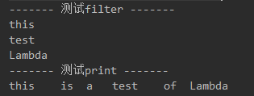

1 初识Lambda1.1 定义1.2 特点1.3 基本语法1.4 示例1.5 Lambda与变量2 函数式接口2.1 定义2.2 与Lambda的关系2.3 函数描述符2.4 Api2.4.1 自定义函数式接口2.4.2 java8 api提供的函数式接口2.5 示例3 方法引用3.1 概念3.2 分类3.2.1 指向静态方法的引用3.2.2 指向任意类型实例方法的方法引用3.2.3 指向现有对象的实例方法的方法引用3.2.4 构造方法引用3.3 示例4 复合Lambda表达式4.1 概念4.2 示例4.2.1 比较器复合4.2.2 谓词复合4.2.3 函数复合
1 初识Lambda
1.1 定义
Lambda表达式可以理解为简洁的表示可传递的匿名函数的一种方式.
1.2 特点
匿名
没有名称，它不像方法那样属于某个特定的类，但是和方法一样，lambda有参数列表、函数主体、返回类型，还可能有可以抛出的异常列表。
传递
可以作为参数传递给方法或者存储在变量中。
简洁
无需像匿名类那样写很多模版代码。
1.3 基本语法
xxxxxxxxxx(parameters) -> expression 或者 (paramters) -> {statements;}
即：（参数列表） -> 函数主体
其中，’函数主体’可以是单行代码，也可以是多行代码，多行时要使用｛｝括起来
1.4 示例
xxxxxxxxxx1. (String s) -> s.length() 传入字符串参数s，返回s的长度2. (Apple a) -> a.getWeight()>50 传入参数Apple，返回apple的weight重量是否大于50的boolean值3. (int x,int y) -> { 传入参数x和y，打印出其相加的结果System.out.println('result:');System.out.println(x+y);}4. () -> 40 不需要参数，直接返回int值40
1.5 Lambda与变量
Lambda可以没有限制的捕获实例变量和静态变量，但局部变量必须声明为final，或者事实上是final。也就是说，Lambda表达式只能捕获指派给它们的局部变量一次。
代码示例：
xxxxxxxxxx// 成功示例int num = 200;Runnable r = () -> System.out.println(num) // num虽然是局部变量，但是在上下文中并没有对num进行更改，可以说num是隐式的final// 失败示例int num = 200;Runnable r = () -> System.out.println(num) // 无法编译，报错，因为 num 作为局部变量，在上下文中出现了再次修改的情况，其不再是隐式的finalnum = 300；
如果允许捕获可变的局部变量，就会引发线程不安全的可能性，这不是java想看到的，java8的重要思想就是实现函数式编程的支持和实现多核的并发优化。
2 函数式接口
2.1 定义
函数式接口就是只定义一个抽象方法的接口，如我们熟知的Comparator和Runnable。
2.2 与Lambda的关系
Lambda表达式的使用是建立在函数式接口的基础上，换句话说，使用Lambda必须要有对应的函数式接口.
2.3 函数描述符
函数式接口抽象方法的签名。如：
xxxxxxxxxxvoid process(Apple a); 函数描述符： (Apple) -> voidint totalWeight(Apple a1,Apple a2); 函数描述符： (Apple,Apple) -> int
2.4 Api
2.4.1 自定义函数式接口
当我们自定义了一个只有一个抽象方法的接口时，这个接口就是一个函数式接口，可以为Lambda表达式使用。
一般自定义的函数式接口，建议使用 @FunctionalInterface 注解标记，这也是java8 api中提供的函数式接口所使用的。
2.4.2 java8 api提供的函数式接口
xxxxxxxxxx函数式接口 函数描述符Predicate<T> T -> booleanConsumer<T> T -> voidFunction<T,R> T -> RSupplier<T> () -> TUnaryOperator<T> T -> TBinaryOperator<T> (T,T) -> TBiPredicate<L,R> (L,R) -> booleanBiconsumer<T,U> (T,U) -> voidBiFunction<T,U,R> (T,U) -> R
2.5 示例
xxxxxxxxxxpublic class LambdaFirst {// 定义测试listprivate static List<String> stringList;// 初始化liststatic{stringList = new ArrayList<String>();stringList.add("this");stringList.add("is");stringList.add("a");stringList.add("test");stringList.add("of");stringList.add("Lambda");}// 筛选出list中字符串public static List<String> filter(List<String> list, Predicate<String> predicate){List<String> result = new ArrayList<String>();for(String str:list){// 根据返回的boolean筛选，此处依然是调用抽象方法，并没有明确判定条件if(predicate.test(str)){result.add(str);}}return result;}// 遍历list，并操作strpublic static void operator(List<String> list, Consumer<String> consumer){List<String> result = new ArrayList<String>();for(String str:list){// 此处依然抽象，没有明确如何操作strconsumer.accept(str);}}public static void main(String[] args) {System.out.println("------- 测试filter -------");List<String> result = filter(stringList,(String str) -> str.length()>3); //传入判定条件，长度大于3for(String s:result){System.out.println(s);}System.out.println("------- 测试print -------");operator(stringList,(String str) -> System.out.print(str+"\t")); //传入操作，打印str}}
控制台结果：

这只是Lambda初级的牛刀小试，可以看出对比匿名类，代码更加简化，同时也增加了更大的灵活性。
3 方法引用
3.1 概念
方法引用可以被看作仅仅调用特定方法的Lambda的一种快捷写法。
3.2 分类
3.2.1 指向静态方法的引用
x例如：Integer的静态方法parseInt，写作 Integer::parseInt
3.2.2 指向任意类型实例方法的方法引用
x例如：String的length方法，写作 String::legth
3.2.3 指向现有对象的实例方法的方法引用
x例如：局部变量 apple 的类型为 Apple，Apple类中有getColor()方法，如果要调用它，就可以写成 apple::getColor
3.2.4 构造方法引用
x4.1 空参构造函数Supplier<Apple> s1 = Apple::new;Apple apple = s1.get();4.2 一个参数的构造方法Function<String,Apple> s2 = Apple::new;Apple apple = s2.get("red");4.3 两个参数的构造方法BiFunction<String,Integer,Apple> s3 = Apple::new;Apple apple = s2.get("red",100);4.4 三个参数的构造方法（注意上面中用到的都是java8提供的函数式接口，对于三个参数的，api中没有合适的函数式接口有这样的签名匹配，所以要自定义函数式接口）public interface MyFunction<A,B,C,D>{D apply(A a,B b,C c);}MyFunction<String,Integer,Apple> s4 = Apple::new;Apple apple = s2.get("red",100,"china");
3.3 示例
xxxxxxxxxx// list集合的遍历操作方法，并未给出具体的遍历操作，后面通过lambda表达式传入private void printList(List<Apple> list, Consumer<Apple> consumer){for(Apple apple:list){consumer.accept(apple);}}// 创建并打印集合listpublic List<Apple> test1(){List<Apple> appleList = new ArrayList<Apple>();BiFunction<String,Integer,Apple> biFunction = Apple :: new; //使用方法引用，创建实体appleList.add(biFunction.apply("red",300));appleList.add(biFunction.apply("blue",200));appleList.add(biFunction.apply("green",100));printList(appleList,(Apple apple) -> System.out.println(apple)); //传入lambda表达式，也就是遍历操作的代码，打印集合中的对象return appleList;}@Testpublic void test2(){System.out.println("----- before sort -----");List<Apple> appleList = test1(); //获取排序前的集合并打印System.out.println("----- after sort -----");appleList.sort((Apple a1,Apple a2) -> a1.getWeight().compareTo(a2.getWeight())); //通过Lambda表达式传入比较器printList(appleList,(Apple apple) -> System.out.println(apple)); //打印排序后的集合}
输出结果：
xxxxxxxxxx@Testpublic void test3(){System.out.println("----- before sort -----");List<Apple> appleList = test1(); //获取原始集合并打印System.out.println("----- after sort -----");appleList.sort(Comparator.comparing(Apple::getWeight)); //使用方法引用，Comparator.comparing是api中提供的接口printList(appleList,(Apple apple) -> System.out.println(apple)); //打印排序后的list}
输出结果：

4 复合Lambda表达式
4.1 概念
将多个简单的Lambda表达式复合成复杂的表达式。
4.2 示例
4.2.1 比较器复合
逆序
上一节实战中的例子是按照weight属性来给苹果进行升序排序，我们想要升序排序之后再降序排序，如何实现呢？使用api提供的Comparator的默认方法reversed。
xxxxxxxxxxpublic void test3(){System.out.println("----- before sort -----");List<Apple> appleList = test1();System.out.println("----- after sort -----");appleList.sort(Comparator.comparing(Apple::getWeight));printList(appleList,(Apple apple) -> System.out.println(apple));System.out.println("----- reverse sort -----"); //插入新的代码appleList.sort(Comparator.comparing(Apple::getWeight).reversed()); //使用reversed方法逆序printList(appleList,(Apple apple) -> System.out.println(apple));}
输出结果：

比较器链
想要在重量排序后在按照颜色对苹果进行排序，可以使用api中的Comparator.thenComparing。
xxxxxxxxxxappleList.sort(Comparator.comparing(Apple::getWeight).thenComparing(Apple::getColor));
4.2.2 谓词复合
谓词接口包括三个方法：negate、and、or，让你可以重用已有的Predicate来创建更复杂的谓词。
xxxxxxxxxxPredicate<Apple> redApple = (Apple apple) -> apple.getColor().equals("red");Predicate<Apple> notRedApple = redApple.negate();Predicate<Apple> redAndHeavyApple = redApple.and((Apple apple) -> apple.getWeight()>150);Predicate<Apple> redAndHeavyAppleOrGreen = redApple.and((Apple apple) -> apple.getWeight()>150).or((Apple apple) -> apple.getColor().equals("green"));
4.2.3 函数复合
可实现流水线式的操作.
api中Function接口谓词配置了andThen和compose两个默认方法。
xFunction<Integer,Integer> f = x -> x+1;Function<Integer,Integer> g = x -> x*2;Function<Integer,Integer> h1 = f.andThen(g);System.out.println(h1.apply(2)); //输出为 6Function<Integer,Integer> h2 = f.compose(g);System.out.println(h2.apply(2)); //输出为 5